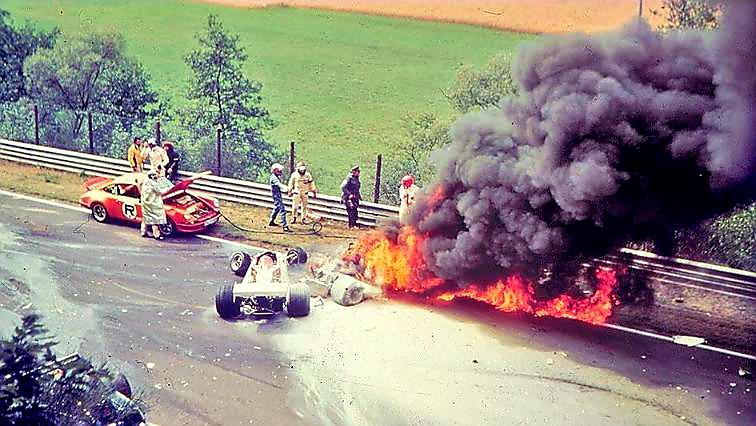
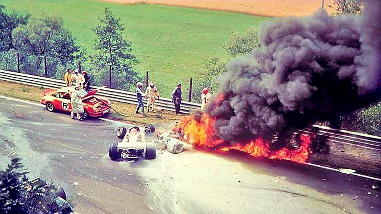
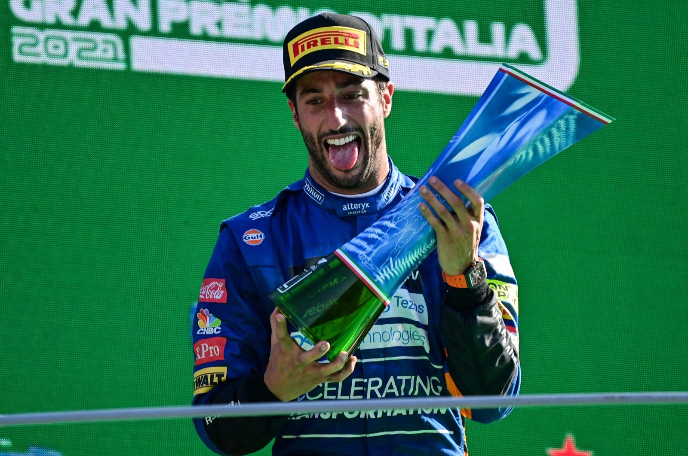
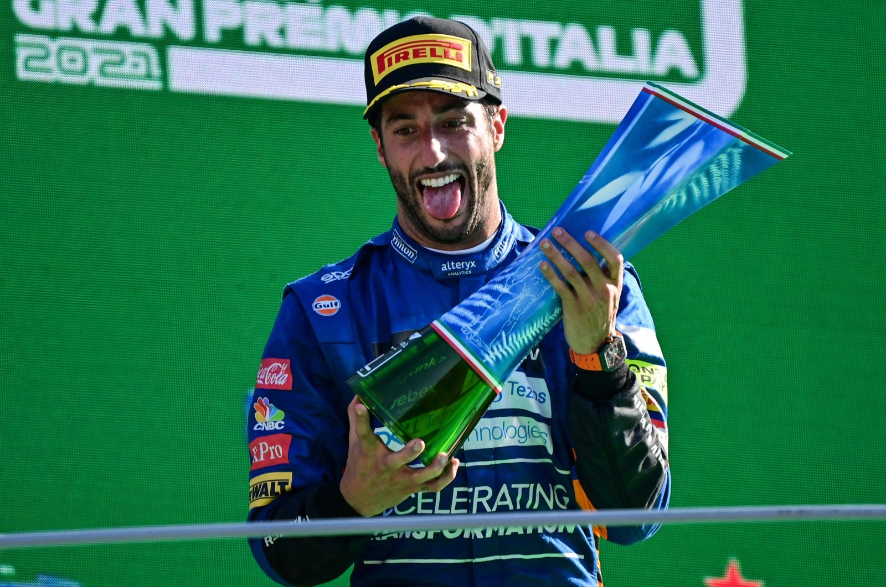

La historia de la categoría reina.
 

La Fórmula 1, el pináculo del automovilismo deportivo, es mucho más que una simple carrera de coches; es una epopeya de innovación tecnológica, rivalidad humana, tragedia y triunfo que se extiende a lo largo de más de siete décadas. Su historia está tejida con los hilos de la velocidad, el riesgo y la ambición, transformándola de un deporte de posguerra en un espectáculo global que cautiva a millones de espectadores en todo el mundo.
El campeonato del mundo de Fórmula 1 se inauguró oficialmente en 1950, bajo la regulación de la recién formada Federación Internacional del Automóvil (FIA). El primer Gran Premio se celebró en el circuito de Silverstone, en el Reino Unido. En esta década inaugural, la F1 era un deporte predominantemente europeo, dominado por los "coches con morro" de los fabricantes italianos Alfa Romeo y Ferrari, y los bólidos alemanes de Mercedes. Juan Manuel Fangio, el "Maestro" argentino, se erigió como la primera gran leyenda del deporte, ganando cinco títulos con cuatro equipos diferentes (Alfa Romeo, Ferrari, Mercedes y Maserati), un récord que solo sería superado por Michael Schumacher décadas más tarde. La seguridad era una preocupación secundaria, y la valentía de los pilotos era tan crucial como la potencia de sus motores.
La Tecnología
La Fórmula 1 ha sido siempre un laboratorio de innovación tecnológica. Desde los primeros días de motores atmosféricos hasta la era moderna de unidades de potencia híbridas, la F1 ha impulsado avances en aerodinámica, materiales compuestos y electrónica que han influido en la industria automotriz en general. La introducción del alerón trasero en la década de 1960 revolucionó la aerodinámica, mientras que la llegada de la telemetría en los años 80 permitió a los equipos monitorear y ajustar el rendimiento del coche en tiempo real. Más recientemente, la implementación de sistemas híbridos y tecnologías de recuperación de energía ha subrayado el compromiso de la F1 con la sostenibilidad y la eficiencia energética. En la actualidad, la Fórmula 1 es un deporte de alta tecnología donde cada componente del coche está optimizado para el rendimiento máximo. Los equipos invierten millones de dólares en investigación y desarrollo, utilizando túneles de viento, simuladores avanzados y análisis de datos para obtener cada fracción de segundo posible en la pista. Ejemplos de innovación incluyen el uso de materiales ultraligeros como la fibra de carbono, sistemas de suspensión activa y complejos sistemas de gestión electrónica que controlan todo, desde la entrega de potencia hasta la aerodinámica variable.
Los Pilotos
 


La Fórmula 1 ha sido el escenario de algunas de las rivalidades más intensas y memorables en la historia del deporte. Desde la feroz competencia entre Ayrton Senna y Alain Prost en los años 80 y 90, hasta la dominación de Michael Schumacher con Ferrari en la década de 2000, los pilotos han sido el alma de la F1. Más recientemente, la rivalidad entre Lewis Hamilton y Max Verstappen ha capturado la atención mundial, con ambos pilotos empujándose mutuamente a nuevos límites.
Los pilotos de Fórmula 1 no solo deben poseer habilidades excepcionales al volante, sino también una resistencia física y mental extraordinaria. Las fuerzas G extremas, las altas temperaturas dentro del coche y la presión constante para rendir al máximo nivel hacen que ser un piloto de F1 sea una de las profesiones más exigentes del mundo. La preparación física rigurosa, junto con el entrenamiento mental para manejar la presión y el estrés, son componentes esenciales del éxito en este deporte.
El campeón actual, Max Verstappen, ha demostrado ser un talento excepcional desde su debut a una edad temprana. Con múltiples campeonatos mundiales a su nombre, Verstappen ha llevado a Red Bull Racing a la cima del deporte, desafiando la hegemonía de Mercedes y Ferrari. Su estilo de conducción agresivo y su capacidad para tomar decisiones rápidas en la pista lo han convertido en uno de los pilotos más emocionantes de ver.